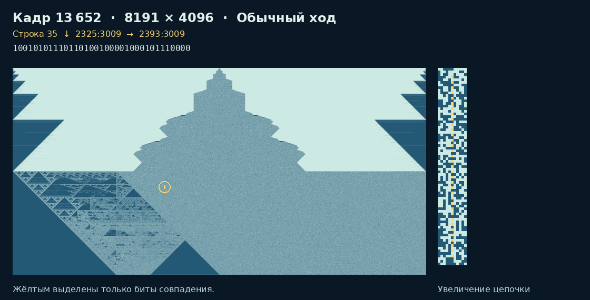
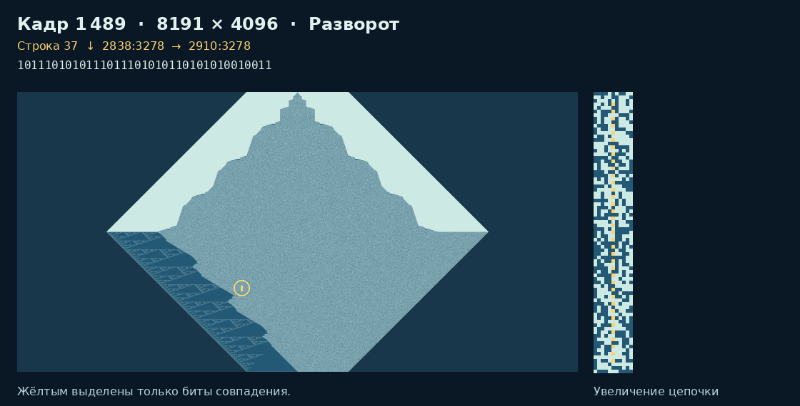

Поиск по кадрам Ромбового Маятника
Десять высот от 8 до 4096 строк и 160 сочетаний настроек. Из них 80 точных циклов XOR и 80 подтверждённых моментов стабилизации AND. Проверены все 8 394 кадра в 50 GIF и исходные биты 3 666 кадров двух новых серий.
Все режимы и результаты, CSV · Все GIF, CSV · Данные, JSON · Поиск строк 5–70 по кадрам, Excel
XOR · число ходов между точными повторами
Пустое поле — кадр 0. Цикл обычного хода начинается с кадра W, где W — ширина. При развороте первый кадр цикла равен N. При возврате совпадают биты, положения и направления обеих ветвей.
| Высота N | 2N−1 · перескок | 2N−1 · отскок | 4N−1 · перескок | 4N−1 · отскок | Разворот · обе ширины и оба края |
|---|---|---|---|---|---|
| 8 | 120 | 224 | 248 | 480 | 112 |
| 16 | 496 | 960 | 1 008 | 1 984 | 480 |
| 32 | 2 016 | 3 968 | 4 064 | 8 064 | 1 984 |
| 64 | 8 128 | 16 128 | 16 320 | 32 512 | 8 064 |
| 128 | 32 640 | 65 024 | 65 408 | 130 560 | 32 512 |
| 256 | 130 816 | 261 120 | 261 888 | 523 264 | 130 560 |
| 512 | 523 776 | 1 046 528 | 1 048 064 | 2 095 104 | 523 264 |
| 1 024 | 2 096 128 | 4 190 208 | 4 193 280 | 8 384 512 | 2 095 104 |
| 2 048 | 8 386 560 | 16 769 024 | 16 775 168 | 33 546 240 | 8 384 512 |
| 4 096 | 33 550 336 | 67 092 480 | 67 104 768 | 134 201 344 | 33 546 240 |
Один круг содержит 2W ходов для перескока, 4(W−1) для отскока и 4(N−1) для разворота. Период равен N/2 кругов в строках без знака ≤. После одного круга линейная разность по XOR распространяется минимум на две строки вниз. Вычисленный бит-свидетель отличает опорный кадр от кадра через половину периода. Его координаты записаны в JSON, начиная с нуля.
AND · стабильное поле и первый возврат ветвей
В каждой ячейке указан кадр последнего изменения поля → следующий кадр с тем же положением и направлением обеих ветвей. Записанная единица может стать нулём. После полного круга без изменений зафиксированное поле сохраняется, а ветви продолжают движение.
| Высота N | 2N−1 · перескок | 2N−1 · отскок | 4N−1 · перескок | 4N−1 · отскок | Разворот · обе ширины и оба края |
|---|---|---|---|---|---|
| 8 | 30 → 60 | 28 → 84 | 62 → 124 | 60 → 180 | 14 → 42 |
| 16 | 62 → 124 | 60 → 180 | 126 → 252 | 124 → 372 | 30 → 90 |
| 32 | 126 → 252 | 124 → 372 | 254 → 508 | 252 → 756 | 62 → 186 |
| 64 | 254 → 508 | 252 → 756 | 510 → 1 020 | 508 → 1 524 | 126 → 378 |
| 128 | 510 → 1 020 | 508 → 1 524 | 1 022 → 2 044 | 1 020 → 3 060 | 254 → 762 |
| 256 | 1 022 → 2 044 | 1 020 → 3 060 | 2 046 → 4 092 | 2 044 → 6 132 | 510 → 1 530 |
| 512 | 2 046 → 4 092 | 2 044 → 6 132 | 4 094 → 8 188 | 4 092 → 12 276 | 1 022 → 3 066 |
| 1 024 | 4 094 → 8 188 | 4 092 → 12 276 | 8 190 → 16 380 | 8 188 → 24 564 | 2 046 → 6 138 |
| 2 048 | 8 190 → 16 380 | 8 188 → 24 564 | 16 382 → 32 764 | 16 380 → 49 140 | 4 094 → 12 282 |
| 4 096 | 16 382 → 32 764 | 16 380 → 49 140 | 32 766 → 65 532 | 32 764 → 98 292 | 8 190 → 24 570 |
Повторы и симметрии по исходным битам
Для высот 8–128 в таблице вариантов есть сплошной перебор кадров от 0 до первого возврата включительно. Выше этой границы исследование форм ромбов по всем исходным кадрам остаётся открытым. В таблице ниже проверен каждый исходный кадр, выбранный для двух новых серий GIF на 2N−1, в том числе кадры с большими номерами в конце цикла. Сами GIF могут показывать плотность битов, оси и контуры.
Сравниваются целые области внутри контура двух ромбов. Положение на поле убирается, пустая клетка, 0 и 1 различаются. Повтором считается очередное появление того же рисунка в пределах серии или варианта. Пара считается зеркальной при отражении слева направо. У пустого кадра 0 ромбы отсутствуют.
Все 160 сочетаний и покрытие сплошного поиска
| Высота N | Ширина W | Правило | Маршрут | Начало | Период | Первый возврат | Кадров | Ромбов | Повторных ромбов | Пара совпала | Пара зеркальна | Вертикальная ось | Горизонтальная ось | Поворот 180° |
|---|---|---|---|---|---|---|---|---|---|---|---|---|---|---|
| 8 | 15 | XOR | перескок | 15 | 120 | 135 | 136 | 270 | 109 | 9 | 4 | 2 | 7 | 2 |
| 8 | 15 | XOR | Разворот · перескок | 8 | 112 | 120 | 121 | 240 | 31 | 9 | 6 | 2 | 6 | 2 |
| 8 | 15 | XOR | отскок | 15 | 224 | 239 | 240 | 478 | 207 | 9 | 4 | 2 | 7 | 2 |
| 8 | 15 | XOR | Разворот · отскок | 8 | 112 | 120 | 121 | 240 | 31 | 9 | 6 | 2 | 6 | 2 |
| 8 | 31 | XOR | перескок | 31 | 248 | 279 | 280 | 558 | 382 | 9 | 14 | 2 | 8 | 2 |
| 8 | 31 | XOR | Разворот · перескок | 8 | 112 | 120 | 121 | 240 | 31 | 9 | 6 | 2 | 6 | 2 |
| 8 | 31 | XOR | отскок | 31 | 480 | 511 | 512 | 1 022 | 732 | 9 | 12 | 2 | 8 | 2 |
| 8 | 31 | XOR | Разворот · отскок | 8 | 112 | 120 | 121 | 240 | 31 | 9 | 6 | 2 | 6 | 2 |
| 8 | 15 | AND | перескок | 30 | 30 | 60 | 61 | 120 | 91 | 20 | 19 | 43 | 8 | 2 |
| 8 | 15 | AND | Разворот · перескок | 14 | 28 | 42 | 43 | 84 | 64 | 3 | 11 | 2 | 8 | 2 |
| 8 | 15 | AND | отскок | 28 | 56 | 84 | 85 | 168 | 139 | 32 | 33 | 71 | 8 | 2 |
| 8 | 15 | AND | Разворот · отскок | 14 | 28 | 42 | 43 | 84 | 64 | 3 | 11 | 2 | 8 | 2 |
| 8 | 31 | AND | перескок | 62 | 62 | 124 | 125 | 248 | 218 | 68 | 67 | 139 | 8 | 2 |
| 8 | 31 | AND | Разворот · перескок | 14 | 28 | 42 | 43 | 84 | 64 | 3 | 11 | 2 | 8 | 2 |
| 8 | 31 | AND | отскок | 60 | 120 | 180 | 181 | 360 | 330 | 112 | 113 | 231 | 8 | 2 |
| 8 | 31 | AND | Разворот · отскок | 14 | 28 | 42 | 43 | 84 | 64 | 3 | 11 | 2 | 8 | 2 |
| 16 | 31 | XOR | перескок | 31 | 496 | 527 | 528 | 1 054 | 337 | 17 | 4 | 2 | 6 | 2 |
| 16 | 31 | XOR | Разворот · перескок | 16 | 480 | 496 | 497 | 992 | 71 | 17 | 9 | 2 | 6 | 2 |
| 16 | 31 | XOR | отскок | 31 | 960 | 991 | 992 | 1 982 | 581 | 17 | 4 | 2 | 6 | 2 |
| 16 | 31 | XOR | Разворот · отскок | 16 | 480 | 496 | 497 | 992 | 71 | 17 | 9 | 2 | 6 | 2 |
| 16 | 63 | XOR | перескок | 63 | 1 008 | 1 071 | 1 072 | 2 142 | 928 | 17 | 5 | 2 | 6 | 2 |
| 16 | 63 | XOR | Разворот · перескок | 16 | 480 | 496 | 497 | 992 | 71 | 17 | 9 | 2 | 6 | 2 |
| 16 | 63 | XOR | отскок | 63 | 1 984 | 2 047 | 2 048 | 4 094 | 1 860 | 17 | 5 | 2 | 6 | 2 |
| 16 | 63 | XOR | Разворот · отскок | 16 | 480 | 496 | 497 | 992 | 71 | 17 | 9 | 2 | 6 | 2 |
| 16 | 31 | AND | перескок | 62 | 62 | 124 | 125 | 248 | 189 | 44 | 43 | 89 | 4 | 2 |
| 16 | 31 | AND | Разворот · перескок | 30 | 60 | 90 | 91 | 180 | 149 | 38 | 48 | 81 | 4 | 2 |
| 16 | 31 | AND | отскок | 60 | 120 | 180 | 181 | 360 | 301 | 72 | 73 | 149 | 4 | 2 |
| 16 | 31 | AND | Разворот · отскок | 30 | 60 | 90 | 91 | 180 | 149 | 38 | 48 | 81 | 4 | 2 |
| 16 | 63 | AND | перескок | 126 | 126 | 252 | 253 | 504 | 441 | 140 | 139 | 283 | 4 | 2 |
| 16 | 63 | AND | Разворот · перескок | 30 | 60 | 90 | 91 | 180 | 149 | 38 | 48 | 81 | 4 | 2 |
| 16 | 63 | AND | отскок | 124 | 248 | 372 | 373 | 744 | 681 | 232 | 233 | 471 | 4 | 2 |
| 16 | 63 | AND | Разворот · отскок | 30 | 60 | 90 | 91 | 180 | 149 | 38 | 48 | 81 | 4 | 2 |
| 32 | 63 | XOR | перескок | 63 | 2 016 | 2 079 | 2 080 | 4 158 | 1 195 | 33 | 4 | 2 | 6 | 2 |
| 32 | 63 | XOR | Разворот · перескок | 32 | 1 984 | 2 016 | 2 017 | 4 032 | 191 | 33 | 12 | 2 | 6 | 2 |
| 32 | 63 | XOR | отскок | 63 | 3 968 | 4 031 | 4 032 | 8 062 | 2 209 | 33 | 4 | 2 | 6 | 2 |
| 32 | 63 | XOR | Разворот · отскок | 32 | 1 984 | 2 016 | 2 017 | 4 032 | 191 | 33 | 12 | 2 | 6 | 2 |
| 32 | 127 | XOR | перескок | 127 | 4 064 | 4 191 | 4 192 | 8 382 | 3 394 | 33 | 5 | 2 | 6 | 2 |
| 32 | 127 | XOR | Разворот · перескок | 32 | 1 984 | 2 016 | 2 017 | 4 032 | 191 | 33 | 12 | 2 | 6 | 2 |
| 32 | 127 | XOR | отскок | 127 | 8 064 | 8 191 | 8 192 | 16 382 | 6 456 | 33 | 5 | 2 | 6 | 2 |
| 32 | 127 | XOR | Разворот · отскок | 32 | 1 984 | 2 016 | 2 017 | 4 032 | 191 | 33 | 12 | 2 | 6 | 2 |
| 32 | 63 | AND | перескок | 126 | 126 | 252 | 253 | 504 | 397 | 92 | 91 | 185 | 4 | 2 |
| 32 | 63 | AND | Разворот · перескок | 62 | 124 | 186 | 187 | 372 | 333 | 118 | 128 | 241 | 4 | 2 |
| 32 | 63 | AND | отскок | 124 | 248 | 372 | 373 | 744 | 637 | 152 | 153 | 309 | 4 | 2 |
| 32 | 63 | AND | Разворот · отскок | 62 | 124 | 186 | 187 | 372 | 333 | 118 | 128 | 241 | 4 | 2 |
| 32 | 127 | AND | перескок | 254 | 254 | 508 | 509 | 1 016 | 897 | 284 | 283 | 571 | 4 | 2 |
| 32 | 127 | AND | Разворот · перескок | 62 | 124 | 186 | 187 | 372 | 333 | 118 | 128 | 241 | 4 | 2 |
| 32 | 127 | AND | отскок | 252 | 504 | 756 | 757 | 1 512 | 1 393 | 472 | 473 | 951 | 4 | 2 |
| 32 | 127 | AND | Разворот · отскок | 62 | 124 | 186 | 187 | 372 | 333 | 118 | 128 | 241 | 4 | 2 |
| 64 | 127 | XOR | перескок | 127 | 8 128 | 8 255 | 8 256 | 16 510 | 4 449 | 65 | 4 | 2 | 6 | 2 |
| 64 | 127 | XOR | Разворот · перескок | 64 | 8 064 | 8 128 | 8 129 | 16 256 | 345 | 65 | 20 | 2 | 6 | 2 |
| 64 | 127 | XOR | отскок | 127 | 16 128 | 16 255 | 16 256 | 32 510 | 8 519 | 65 | 4 | 2 | 6 | 2 |
| 64 | 127 | XOR | Разворот · отскок | 64 | 8 064 | 8 128 | 8 129 | 16 256 | 345 | 65 | 20 | 2 | 6 | 2 |
| 64 | 255 | XOR | перескок | 255 | 16 320 | 16 575 | 16 576 | 33 150 | 12 936 | 65 | 5 | 2 | 6 | 2 |
| 64 | 255 | XOR | Разворот · перескок | 64 | 8 064 | 8 128 | 8 129 | 16 256 | 345 | 65 | 20 | 2 | 6 | 2 |
| 64 | 255 | XOR | отскок | 255 | 32 512 | 32 767 | 32 768 | 65 534 | 25 198 | 65 | 5 | 2 | 6 | 2 |
| 64 | 255 | XOR | Разворот · отскок | 64 | 8 064 | 8 128 | 8 129 | 16 256 | 345 | 65 | 20 | 2 | 6 | 2 |
| 64 | 127 | AND | перескок | 254 | 254 | 508 | 509 | 1 016 | 813 | 188 | 187 | 377 | 4 | 2 |
| 64 | 127 | AND | Разворот · перескок | 126 | 252 | 378 | 379 | 756 | 701 | 278 | 288 | 561 | 4 | 2 |
| 64 | 127 | AND | отскок | 252 | 504 | 756 | 757 | 1 512 | 1 309 | 312 | 313 | 629 | 4 | 2 |
| 64 | 127 | AND | Разворот · отскок | 126 | 252 | 378 | 379 | 756 | 701 | 278 | 288 | 561 | 4 | 2 |
| 64 | 255 | AND | перескок | 510 | 510 | 1 020 | 1 021 | 2 040 | 1 809 | 572 | 571 | 1 147 | 4 | 2 |
| 64 | 255 | AND | Разворот · перескок | 126 | 252 | 378 | 379 | 756 | 701 | 278 | 288 | 561 | 4 | 2 |
| 64 | 255 | AND | отскок | 508 | 1 016 | 1 524 | 1 525 | 3 048 | 2 817 | 952 | 953 | 1 911 | 4 | 2 |
| 64 | 255 | AND | Разворот · отскок | 126 | 252 | 378 | 379 | 756 | 701 | 278 | 288 | 561 | 4 | 2 |
| 128 | 255 | XOR | перескок | 255 | 32 640 | 32 895 | 32 896 | 65 790 | 17 067 | 129 | 4 | 2 | 6 | 2 |
| 128 | 255 | XOR | Разворот · перескок | 128 | 32 512 | 32 640 | 32 641 | 65 280 | 644 | 129 | 36 | 2 | 6 | 2 |
| 128 | 255 | XOR | отскок | 255 | 65 024 | 65 279 | 65 280 | 130 558 | 33 389 | 129 | 4 | 2 | 6 | 2 |
| 128 | 255 | XOR | Разворот · отскок | 128 | 32 512 | 32 640 | 32 641 | 65 280 | 644 | 129 | 36 | 2 | 6 | 2 |
| 128 | 511 | XOR | перескок | 511 | 65 408 | 65 919 | 65 920 | 131 838 | 50 416 | 129 | 5 | 2 | 6 | 2 |
| 128 | 511 | XOR | Разворот · перескок | 128 | 32 512 | 32 640 | 32 641 | 65 280 | 644 | 129 | 36 | 2 | 6 | 2 |
| 128 | 511 | XOR | отскок | 511 | 130 560 | 131 071 | 131 072 | 262 142 | 99 510 | 129 | 5 | 2 | 6 | 2 |
| 128 | 511 | XOR | Разворот · отскок | 128 | 32 512 | 32 640 | 32 641 | 65 280 | 644 | 129 | 36 | 2 | 6 | 2 |
| 128 | 255 | AND | перескок | 510 | 510 | 1 020 | 1 021 | 2 040 | 1 645 | 380 | 379 | 761 | 4 | 2 |
| 128 | 255 | AND | Разворот · перескок | 254 | 508 | 762 | 763 | 1 524 | 1 437 | 598 | 608 | 1 201 | 4 | 2 |
| 128 | 255 | AND | отскок | 508 | 1 016 | 1 524 | 1 525 | 3 048 | 2 653 | 632 | 633 | 1 269 | 4 | 2 |
| 128 | 255 | AND | Разворот · отскок | 254 | 508 | 762 | 763 | 1 524 | 1 437 | 598 | 608 | 1 201 | 4 | 2 |
| 128 | 511 | AND | перескок | 1 022 | 1 022 | 2 044 | 2 045 | 4 088 | 3 633 | 1 148 | 1 147 | 2 299 | 4 | 2 |
| 128 | 511 | AND | Разворот · перескок | 254 | 508 | 762 | 763 | 1 524 | 1 437 | 598 | 608 | 1 201 | 4 | 2 |
| 128 | 511 | AND | отскок | 1 020 | 2 040 | 3 060 | 3 061 | 6 120 | 5 665 | 1 912 | 1 913 | 3 831 | 4 | 2 |
| 128 | 511 | AND | Разворот · отскок | 254 | 508 | 762 | 763 | 1 524 | 1 437 | 598 | 608 | 1 201 | 4 | 2 |
| 256 | 511 | XOR | перескок | 511 | 130 816 | 131 327 | — | — | — | — | — | — | — | — |
| 256 | 511 | XOR | Разворот · перескок | 256 | 130 560 | 130 816 | — | — | — | — | — | — | — | — |
| 256 | 511 | XOR | отскок | 511 | 261 120 | 261 631 | — | — | — | — | — | — | — | — |
| 256 | 511 | XOR | Разворот · отскок | 256 | 130 560 | 130 816 | — | — | — | — | — | — | — | — |
| 256 | 1 023 | XOR | перескок | 1 023 | 261 888 | 262 911 | — | — | — | — | — | — | — | — |
| 256 | 1 023 | XOR | Разворот · перескок | 256 | 130 560 | 130 816 | — | — | — | — | — | — | — | — |
| 256 | 1 023 | XOR | отскок | 1 023 | 523 264 | 524 287 | — | — | — | — | — | — | — | — |
| 256 | 1 023 | XOR | Разворот · отскок | 256 | 130 560 | 130 816 | — | — | — | — | — | — | — | — |
| 256 | 511 | AND | перескок | 1 022 | 1 022 | 2 044 | — | — | — | — | — | — | — | — |
| 256 | 511 | AND | Разворот · перескок | 510 | 1 020 | 1 530 | — | — | — | — | — | — | — | — |
| 256 | 511 | AND | отскок | 1 020 | 2 040 | 3 060 | — | — | — | — | — | — | — | — |
| 256 | 511 | AND | Разворот · отскок | 510 | 1 020 | 1 530 | — | — | — | — | — | — | — | — |
| 256 | 1 023 | AND | перескок | 2 046 | 2 046 | 4 092 | — | — | — | — | — | — | — | — |
| 256 | 1 023 | AND | Разворот · перескок | 510 | 1 020 | 1 530 | — | — | — | — | — | — | — | — |
| 256 | 1 023 | AND | отскок | 2 044 | 4 088 | 6 132 | — | — | — | — | — | — | — | — |
| 256 | 1 023 | AND | Разворот · отскок | 510 | 1 020 | 1 530 | — | — | — | — | — | — | — | — |
| 512 | 1 023 | XOR | перескок | 1 023 | 523 776 | 524 799 | — | — | — | — | — | — | — | — |
| 512 | 1 023 | XOR | Разворот · перескок | 512 | 523 264 | 523 776 | — | — | — | — | — | — | — | — |
| 512 | 1 023 | XOR | отскок | 1 023 | 1 046 528 | 1 047 551 | — | — | — | — | — | — | — | — |
| 512 | 1 023 | XOR | Разворот · отскок | 512 | 523 264 | 523 776 | — | — | — | — | — | — | — | — |
| 512 | 2 047 | XOR | перескок | 2 047 | 1 048 064 | 1 050 111 | — | — | — | — | — | — | — | — |
| 512 | 2 047 | XOR | Разворот · перескок | 512 | 523 264 | 523 776 | — | — | — | — | — | — | — | — |
| 512 | 2 047 | XOR | отскок | 2 047 | 2 095 104 | 2 097 151 | — | — | — | — | — | — | — | — |
| 512 | 2 047 | XOR | Разворот · отскок | 512 | 523 264 | 523 776 | — | — | — | — | — | — | — | — |
| 512 | 1 023 | AND | перескок | 2 046 | 2 046 | 4 092 | — | — | — | — | — | — | — | — |
| 512 | 1 023 | AND | Разворот · перескок | 1 022 | 2 044 | 3 066 | — | — | — | — | — | — | — | — |
| 512 | 1 023 | AND | отскок | 2 044 | 4 088 | 6 132 | — | — | — | — | — | — | — | — |
| 512 | 1 023 | AND | Разворот · отскок | 1 022 | 2 044 | 3 066 | — | — | — | — | — | — | — | — |
| 512 | 2 047 | AND | перескок | 4 094 | 4 094 | 8 188 | — | — | — | — | — | — | — | — |
| 512 | 2 047 | AND | Разворот · перескок | 1 022 | 2 044 | 3 066 | — | — | — | — | — | — | — | — |
| 512 | 2 047 | AND | отскок | 4 092 | 8 184 | 12 276 | — | — | — | — | — | — | — | — |
| 512 | 2 047 | AND | Разворот · отскок | 1 022 | 2 044 | 3 066 | — | — | — | — | — | — | — | — |
| 1 024 | 2 047 | XOR | перескок | 2 047 | 2 096 128 | 2 098 175 | — | — | — | — | — | — | — | — |
| 1 024 | 2 047 | XOR | Разворот · перескок | 1 024 | 2 095 104 | 2 096 128 | — | — | — | — | — | — | — | — |
| 1 024 | 2 047 | XOR | отскок | 2 047 | 4 190 208 | 4 192 255 | — | — | — | — | — | — | — | — |
| 1 024 | 2 047 | XOR | Разворот · отскок | 1 024 | 2 095 104 | 2 096 128 | — | — | — | — | — | — | — | — |
| 1 024 | 4 095 | XOR | перескок | 4 095 | 4 193 280 | 4 197 375 | — | — | — | — | — | — | — | — |
| 1 024 | 4 095 | XOR | Разворот · перескок | 1 024 | 2 095 104 | 2 096 128 | — | — | — | — | — | — | — | — |
| 1 024 | 4 095 | XOR | отскок | 4 095 | 8 384 512 | 8 388 607 | — | — | — | — | — | — | — | — |
| 1 024 | 4 095 | XOR | Разворот · отскок | 1 024 | 2 095 104 | 2 096 128 | — | — | — | — | — | — | — | — |
| 1 024 | 2 047 | AND | перескок | 4 094 | 4 094 | 8 188 | — | — | — | — | — | — | — | — |
| 1 024 | 2 047 | AND | Разворот · перескок | 2 046 | 4 092 | 6 138 | — | — | — | — | — | — | — | — |
| 1 024 | 2 047 | AND | отскок | 4 092 | 8 184 | 12 276 | — | — | — | — | — | — | — | — |
| 1 024 | 2 047 | AND | Разворот · отскок | 2 046 | 4 092 | 6 138 | — | — | — | — | — | — | — | — |
| 1 024 | 4 095 | AND | перескок | 8 190 | 8 190 | 16 380 | — | — | — | — | — | — | — | — |
| 1 024 | 4 095 | AND | Разворот · перескок | 2 046 | 4 092 | 6 138 | — | — | — | — | — | — | — | — |
| 1 024 | 4 095 | AND | отскок | 8 188 | 16 376 | 24 564 | — | — | — | — | — | — | — | — |
| 1 024 | 4 095 | AND | Разворот · отскок | 2 046 | 4 092 | 6 138 | — | — | — | — | — | — | — | — |
| 2 048 | 4 095 | XOR | перескок | 4 095 | 8 386 560 | 8 390 655 | — | — | — | — | — | — | — | — |
| 2 048 | 4 095 | XOR | Разворот · перескок | 2 048 | 8 384 512 | 8 386 560 | — | — | — | — | — | — | — | — |
| 2 048 | 4 095 | XOR | отскок | 4 095 | 16 769 024 | 16 773 119 | — | — | — | — | — | — | — | — |
| 2 048 | 4 095 | XOR | Разворот · отскок | 2 048 | 8 384 512 | 8 386 560 | — | — | — | — | — | — | — | — |
| 2 048 | 8 191 | XOR | перескок | 8 191 | 16 775 168 | 16 783 359 | — | — | — | — | — | — | — | — |
| 2 048 | 8 191 | XOR | Разворот · перескок | 2 048 | 8 384 512 | 8 386 560 | — | — | — | — | — | — | — | — |
| 2 048 | 8 191 | XOR | отскок | 8 191 | 33 546 240 | 33 554 431 | — | — | — | — | — | — | — | — |
| 2 048 | 8 191 | XOR | Разворот · отскок | 2 048 | 8 384 512 | 8 386 560 | — | — | — | — | — | — | — | — |
| 2 048 | 4 095 | AND | перескок | 8 190 | 8 190 | 16 380 | — | — | — | — | — | — | — | — |
| 2 048 | 4 095 | AND | Разворот · перескок | 4 094 | 8 188 | 12 282 | — | — | — | — | — | — | — | — |
| 2 048 | 4 095 | AND | отскок | 8 188 | 16 376 | 24 564 | — | — | — | — | — | — | — | — |
| 2 048 | 4 095 | AND | Разворот · отскок | 4 094 | 8 188 | 12 282 | — | — | — | — | — | — | — | — |
| 2 048 | 8 191 | AND | перескок | 16 382 | 16 382 | 32 764 | — | — | — | — | — | — | — | — |
| 2 048 | 8 191 | AND | Разворот · перескок | 4 094 | 8 188 | 12 282 | — | — | — | — | — | — | — | — |
| 2 048 | 8 191 | AND | отскок | 16 380 | 32 760 | 49 140 | — | — | — | — | — | — | — | — |
| 2 048 | 8 191 | AND | Разворот · отскок | 4 094 | 8 188 | 12 282 | — | — | — | — | — | — | — | — |
| 4 096 | 8 191 | XOR | перескок | 8 191 | 33 550 336 | 33 558 527 | — | — | — | — | — | — | — | — |
| 4 096 | 8 191 | XOR | Разворот · перескок | 4 096 | 33 546 240 | 33 550 336 | — | — | — | — | — | — | — | — |
| 4 096 | 8 191 | XOR | отскок | 8 191 | 67 092 480 | 67 100 671 | — | — | — | — | — | — | — | — |
| 4 096 | 8 191 | XOR | Разворот · отскок | 4 096 | 33 546 240 | 33 550 336 | — | — | — | — | — | — | — | — |
| 4 096 | 16 383 | XOR | перескок | 16 383 | 67 104 768 | 67 121 151 | — | — | — | — | — | — | — | — |
| 4 096 | 16 383 | XOR | Разворот · перескок | 4 096 | 33 546 240 | 33 550 336 | — | — | — | — | — | — | — | — |
| 4 096 | 16 383 | XOR | отскок | 16 383 | 134 201 344 | 134 217 727 | — | — | — | — | — | — | — | — |
| 4 096 | 16 383 | XOR | Разворот · отскок | 4 096 | 33 546 240 | 33 550 336 | — | — | — | — | — | — | — | — |
| 4 096 | 8 191 | AND | перескок | 16 382 | 16 382 | 32 764 | — | — | — | — | — | — | — | — |
| 4 096 | 8 191 | AND | Разворот · перескок | 8 190 | 16 380 | 24 570 | — | — | — | — | — | — | — | — |
| 4 096 | 8 191 | AND | отскок | 16 380 | 32 760 | 49 140 | — | — | — | — | — | — | — | — |
| 4 096 | 8 191 | AND | Разворот · отскок | 8 190 | 16 380 | 24 570 | — | — | — | — | — | — | — | — |
| 4 096 | 16 383 | AND | перескок | 32 766 | 32 766 | 65 532 | — | — | — | — | — | — | — | — |
| 4 096 | 16 383 | AND | Разворот · перескок | 8 190 | 16 380 | 24 570 | — | — | — | — | — | — | — | — |
| 4 096 | 16 383 | AND | отскок | 32 764 | 65 528 | 98 292 | — | — | — | — | — | — | — | — |
| 4 096 | 16 383 | AND | Разворот · отскок | 8 190 | 16 380 | 24 570 | — | — | — | — | — | — | — | — |
| Высота N | Серия | Кадров | Ромбов | Повторных ромбов | Пара совпала | Пара зеркальна | Вертикальная ось | Горизонтальная ось | Поворот 180° |
|---|---|---|---|---|---|---|---|---|---|
| 8 | Обычный ход | 136 | 270 | 109 | 9 | 4 | 2 | 7 | 2 |
| 8 | Разворот | 121 | 240 | 31 | 9 | 6 | 2 | 6 | 2 |
| 16 | Обычный ход | 272 | 542 | 55 | 9 | 2 | 2 | 4 | 2 |
| 16 | Разворот | 262 | 522 | 28 | 9 | 2 | 2 | 4 | 2 |
| 32 | Обычный ход | 304 | 606 | 55 | 5 | 2 | 2 | 4 | 2 |
| 32 | Разворот | 279 | 556 | 20 | 5 | 4 | 2 | 4 | 2 |
| 64 | Обычный ход | 368 | 734 | 78 | 3 | 2 | 2 | 4 | 2 |
| 64 | Разворот | 312 | 622 | 14 | 3 | 3 | 2 | 4 | 2 |
| 128 | Обычный ход | 496 | 990 | 138 | 2 | 2 | 2 | 4 | 2 |
| 128 | Разворот | 376 | 750 | 11 | 2 | 2 | 2 | 4 | 2 |
| 256 | Обычный ход | 57 | 112 | 5 | 0 | 0 | 0 | 0 | 0 |
| 256 | Разворот | 91 | 180 | 8 | 0 | 0 | 0 | 0 | 0 |
| 512 | Обычный ход | 57 | 112 | 5 | 0 | 0 | 0 | 0 | 0 |
| 512 | Разворот | 91 | 180 | 7 | 0 | 0 | 0 | 0 | 0 |
| 1 024 | Обычный ход | 57 | 112 | 5 | 0 | 0 | 0 | 0 | 0 |
| 1 024 | Разворот | 91 | 180 | 5 | 0 | 0 | 0 | 0 | 0 |
| 2 048 | Обычный ход | 57 | 112 | 5 | 0 | 0 | 0 | 0 | 0 |
| 2 048 | Разворот | 91 | 180 | 6 | 0 | 0 | 0 | 0 | 0 |
| 4 096 | Обычный ход | 57 | 112 | 5 | 0 | 0 | 0 | 0 | 0 |
| 4 096 | Разворот | 91 | 180 | 6 | 0 | 0 | 0 | 0 | 0 |
В подборках от 256 строк кадр 1 отсутствует. Столбцы осей показывают найденное только на выбранных кадрах. Локальные симметричные фигуры собраны в Атласе и Атласе разворота.
Строки 5–70 по четырём направлениям
Продолжение · поиск строк 30–70 на новых маршрутах
В Excel-отчёте проверены горизонталь →, вертикаль ↓ и обе диагонали ↘ и ↙ на исходной решётке. У 66 шаблонов, начиная с 10101, проверены все 3 666 кадра двух новых GIF-серий и 300 снимков 30 видов цветной коллекции. В первом листе строки 5–70 стоят слева, по столбцам идут высоты и виды. Каждая ячейка содержит все найденные номера кадров и метку «Всегда», если совпали все непустые кадры серии.
Самая длинная находка — строка 37 на кадре 1 489 при высоте 4 096. Серия «Разворот», направление ↓.
Открыть отчёт Excel · Строка 5 · кадр 3 · Строка 24 · кадр 15 004


Сохранённые кадры с находками от строки 35
Порог прошли два кадра поля 8 191 × 4 096. В оригинальном PNG каждый пиксель соответствует одной клетке, жёлтые пиксели отмечают все биты найденной цепочки.






Все 50 GIF и их сохранённые кадры
Сравнивается декодированный растр без строки с номером кадра. Для повторов и осей считаются непустые кадры в пределах одного GIF. В растр входят раскраска, оси и контуры. Для крупных обзоров «2×2» и выше показывает размер блока исходных клеток.
Кадры и первые повторы по каждому файлу
| Высота N | Серия | Часть | Растр | Кадров | Пустых | Повторов | Вертикальная ось | Горизонтальная ось | Поворот 180° | Первая пара кадров |
|---|---|---|---|---|---|---|---|---|---|---|
| 8 | Черновик | До цикла | Битовый растр | 16 | 1 | 0 | 1 | 2 | 1 | — |
| 8 | Черновик | Цикл | Битовый растр | 120 | 0 | 0 | 0 | 0 | 0 | — |
| 8 | Черновик с осями | До цикла | Битовый растр | 16 | 1 | 0 | 1 | 2 | 1 | — |
| 8 | Черновик с осями | Цикл | Битовый растр | 120 | 0 | 0 | 0 | 0 | 0 | — |
| 8 | Черновик двух ромбов | До цикла | Битовый растр | 16 | 1 | 0 | 1 | 2 | 1 | — |
| 8 | Черновик двух ромбов | Цикл | Битовый растр | 120 | 0 | 0 | 2 | 1 | 1 | — |
| 8 | Обычный ход | Одна лента | Битовый растр | 136 | 1 | 1 | 1 | 2 | 1 | 15 → 135 |
| 8 | Разворот | Одна лента | Битовый растр | 121 | 1 | 1 | 0 | 2 | 0 | 8 → 120 |
| 16 | Черновик | До цикла | Битовый растр | 32 | 1 | 0 | 1 | 2 | 1 | — |
| 16 | Черновик | Цикл | Битовый растр | 240 | 0 | 0 | 0 | 0 | 0 | — |
| 16 | Черновик с осями | До цикла | Битовый растр | 32 | 1 | 0 | 1 | 2 | 1 | — |
| 16 | Черновик с осями | Цикл | Битовый растр | 240 | 0 | 0 | 0 | 0 | 0 | — |
| 16 | Черновик двух ромбов | До цикла | Битовый растр | 32 | 1 | 0 | 1 | 2 | 1 | — |
| 16 | Черновик двух ромбов | Цикл | Битовый растр | 240 | 0 | 0 | 0 | 0 | 0 | — |
| 16 | Обычный ход | Одна лента | Битовый растр | 272 | 1 | 1 | 1 | 2 | 1 | 31 → 527 |
| 16 | Разворот | Одна лента | Битовый растр | 262 | 1 | 1 | 0 | 2 | 0 | 16 → 496 |
| 32 | Черновик | До цикла | Битовый растр | 64 | 1 | 0 | 1 | 2 | 1 | — |
| 32 | Черновик | Цикл | Битовый растр | 240 | 0 | 0 | 0 | 0 | 0 | — |
| 32 | Черновик с осями | До цикла | Битовый растр | 64 | 1 | 0 | 1 | 2 | 1 | — |
| 32 | Черновик с осями | Цикл | Битовый растр | 240 | 0 | 0 | 0 | 0 | 0 | — |
| 32 | Черновик двух ромбов | До цикла | Битовый растр | 64 | 1 | 0 | 1 | 2 | 1 | — |
| 32 | Черновик двух ромбов | Цикл | Битовый растр | 240 | 0 | 0 | 0 | 0 | 0 | — |
| 32 | Обычный ход | Одна лента | Битовый растр | 304 | 1 | 1 | 1 | 2 | 1 | 63 → 2 079 |
| 32 | Разворот | Одна лента | Битовый растр | 279 | 1 | 1 | 1 | 2 | 1 | 32 → 2 016 |
| 64 | Черновик | До цикла | Битовый растр | 128 | 1 | 0 | 1 | 2 | 1 | — |
| 64 | Черновик | Цикл | Битовый растр | 240 | 0 | 0 | 0 | 0 | 0 | — |
| 64 | Черновик с осями | До цикла | Битовый растр | 128 | 1 | 0 | 1 | 2 | 1 | — |
| 64 | Черновик с осями | Цикл | Битовый растр | 240 | 0 | 0 | 0 | 0 | 0 | — |
| 64 | Черновик двух ромбов | До цикла | Битовый растр | 128 | 1 | 0 | 1 | 2 | 1 | — |
| 64 | Черновик двух ромбов | Цикл | Битовый растр | 240 | 0 | 0 | 0 | 0 | 0 | — |
| 64 | Обычный ход | Одна лента | Битовый растр | 368 | 1 | 1 | 1 | 2 | 1 | 127 → 8 255 |
| 64 | Разворот | Одна лента | Битовый растр | 312 | 1 | 1 | 1 | 2 | 1 | 64 → 8 128 |
| 128 | Черновик | До цикла | Битовый растр | 256 | 1 | 0 | 1 | 2 | 1 | — |
| 128 | Черновик | Цикл | Битовый растр | 240 | 0 | 0 | 0 | 0 | 0 | — |
| 128 | Черновик с осями | До цикла | Битовый растр | 256 | 1 | 0 | 1 | 2 | 1 | — |
| 128 | Черновик с осями | Цикл | Битовый растр | 240 | 0 | 0 | 0 | 0 | 0 | — |
| 128 | Черновик двух ромбов | До цикла | Битовый растр | 256 | 1 | 0 | 1 | 2 | 1 | — |
| 128 | Черновик двух ромбов | Цикл | Битовый растр | 240 | 0 | 0 | 0 | 0 | 0 | — |
| 128 | Обычный ход | Одна лента | Битовый растр | 496 | 1 | 1 | 1 | 2 | 1 | 255 → 32 895 |
| 128 | Разворот | Одна лента | Битовый растр | 376 | 1 | 1 | 1 | 2 | 1 | 128 → 32 640 |
| 256 | Обычный ход | Одна лента | 1×1 | 57 | 1 | 1 | 0 | 0 | 0 | 511 → 131 327 |
| 256 | Разворот | Одна лента | 1×1 | 91 | 1 | 1 | 0 | 0 | 0 | 256 → 130 816 |
| 512 | Обычный ход | Одна лента | 1×1 | 57 | 1 | 1 | 0 | 0 | 0 | 1 023 → 524 799 |
| 512 | Разворот | Одна лента | 1×1 | 91 | 1 | 1 | 0 | 0 | 0 | 512 → 523 776 |
| 1 024 | Обычный ход | Одна лента | 2×2 | 57 | 1 | 1 | 0 | 0 | 0 | 2 047 → 2 098 175 |
| 1 024 | Разворот | Одна лента | 2×2 | 91 | 1 | 1 | 0 | 0 | 0 | 1 024 → 2 096 128 |
| 2 048 | Обычный ход | Одна лента | 4×4 | 57 | 1 | 1 | 0 | 0 | 0 | 4 095 → 8 390 655 |
| 2 048 | Разворот | Одна лента | 4×4 | 91 | 1 | 1 | 0 | 0 | 0 | 2 048 → 8 386 560 |
| 4 096 | Обычный ход | Одна лента | 8×8 | 57 | 1 | 1 | 0 | 0 | 0 | 8 191 → 33 558 527 |
| 4 096 | Разворот | Одна лента | 8×8 | 91 | 1 | 1 | 0 | 0 | 0 | 4 096 → 33 550 336 |


Вариации в интерфейсе
| Вариация | Что меняется |
|---|---|
| Перескок / отскок | Вершины переходят через край или отражаются от края. |
| Разворот | Обе ветви разворачиваются на последнем касании ромбов. Вершины остаются в центральных N столбцах при обеих ширинах. |
| Построение XOR / AND | Правило накопления вклада каждого прохода. Меняет сами биты. |
| Склейка ← / → | Копии половин поля слева, справа или с обеих сторон. |
| Ромб-монета | Наложение, XOR либо AND двух ромбов, с отражением второй стороны либо без него. Работает на уже построенном кадре. |
| Ромб / квадрат | Проекция на 45° у основного поля и у Ромба-монеты. |
| Повторы и цвет осей | Подсветка совпадений на поле и окраска центральных осей в Хабе. |
| Четыре треугольника в Хабе | Два ромба по две половины и режим «Вверх-вниз» на поле 2047 × 1024. |
| Кадры, пауза, масштаб и GIF | Воспроизведение в обе стороны, шаг через заданное число кадров, стоп при касании, ползунок, масштаб и запись выбранного вида. |
Циклы рассчитаны при выборе режима до первого хода. Переключение правил края или разворота посреди истории создаёт отдельную последовательность.